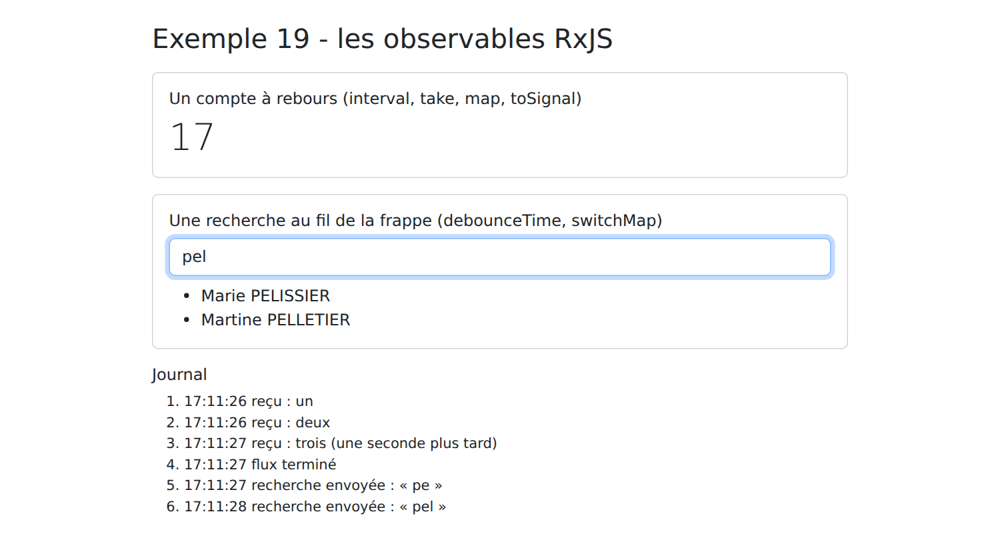
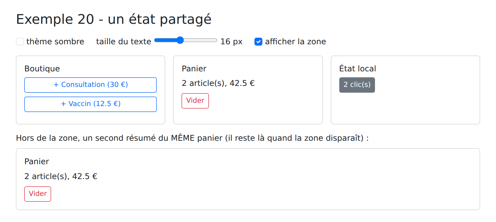

5. Observables et état partagé
5.1. Exemple 19 : les observables RxJS
Nous avons déjà rencontré deux sortes de valeurs qui changent au fil du temps : les signaux, qui ont toujours une valeur courante, et les promesses, qui livrent une seule valeur, plus tard. [Angular] en utilise une troisième : les observables, fournis par la bibliothèque [RxJS]. Un observable est un flux de valeurs, qui arrivent au fil du temps : les frappes au clavier, les tics d'une minuterie, les événements du routeur (exemple 17), la réponse d'un serveur (exemple 22).
Leur force tient dans leurs opérateurs : des fonctions qui transforment un flux en un autre flux (filtrer, attendre, abandonner une requête dépassée...). Cet exemple en présente les principaux, sur trois cas.
| // =========================================================================
// 19-rxjs/src/app/app.ts - les observables de la bibliothèque RxJS
// -------------------------------------------------------------------------
// Un OBSERVABLE est un FLUX de valeurs, qui arrivent au fil du temps (les
// frappes au clavier, les tics d'une minuterie, la réponse d'un serveur...).
// Angular s'en sert beaucoup : le client HTTP (exemple 22) et le routeur
// (exemple 17) renvoient des observables.
// - observable.subscribe(fonction) : on s'ABONNE ; la fonction reçoit
// chaque valeur. Rien ne se passe tant que personne n'est abonné ;
// - observable.pipe(op1, op2...) : un NOUVEAU flux, transformé par des
// OPÉRATEURS (map, filter, debounceTime, switchMap...) ;
// - toSignal(observable) : un signal qui vaut la dernière valeur reçue
// (abonnement et désabonnement automatiques).
// =========================================================================
import { Component, DestroyRef, inject, signal } from '@angular/core';
import { takeUntilDestroyed, toSignal } from '@angular/core/rxjs-interop';
import { debounceTime, delay, distinctUntilChanged, filter, interval, map, Observable, of, Subject, switchMap, take, tap } from 'rxjs';
const MEDECINS = ['Marie PELISSIER', 'Paul TATOU', 'Sophie DUPONT', 'Jacques DURAND', 'Martine PELLETIER'];
@Component({
selector: 'app-root',
templateUrl: './app.html',
})
export class App {
protected readonly journal = signal<string[]>([]);
// 2. une minuterie : 0, 1, 2... toutes les secondes ; take(20) : 20 valeurs
// puis le flux se termine ; map : chaque valeur est transformée
private readonly secondes$ = interval(1000).pipe(
take(20),
map((n) => 20 - n - 1),
);
// toSignal : le compte à rebours, sous forme de signal
protected readonly rebours = toSignal(this.secondes$, { initialValue: 20 });
// 3. une recherche "au fil de la frappe" : un Subject est un observable
// dans lequel on POUSSE soi-même des valeurs (next)
private readonly saisies = new Subject<string>();
protected readonly resultats = toSignal(
this.saisies.pipe(
map((texte) => texte.trim().toLowerCase()),
debounceTime(400), // on attend 400 ms sans frappe
distinctUntilChanged(), // on ignore un texte identique au précédent
filter((texte) => texte.length >= 2),
tap((texte) => this.tracer(`recherche envoyée : « ${texte} »`)),
// switchMap : une recherche par texte ; si un nouveau texte arrive
// avant la réponse, l'ancienne recherche est ABANDONNÉE
switchMap((texte) => this.rechercher(texte)),
),
{ initialValue: [] as string[] },
);
constructor() {
// 1. un observable fabriqué à la main : il émet trois valeurs, puis se termine
const troisValeurs = new Observable<string>((abonne) => {
abonne.next('un');
abonne.next('deux');
setTimeout(() => {
abonne.next('trois (une seconde plus tard)');
abonne.complete();
}, 1000);
});
// takeUntilDestroyed : l'abonnement cesse si le composant disparaît
troisValeurs.pipe(takeUntilDestroyed(inject(DestroyRef))).subscribe({
next: (valeur) => this.tracer(`reçu : ${valeur}`),
complete: () => this.tracer('flux terminé'),
});
}
protected saisir(texte: string): void {
this.saisies.next(texte);
}
// un "serveur" simulé : la réponse arrive après un délai aléatoire
private rechercher(texte: string): Observable<string[]> {
const trouves = MEDECINS.filter((m) => m.toLowerCase().includes(texte));
return of(trouves).pipe(delay(200 + Math.random() * 600));
}
private tracer(message: string): void {
this.journal.update((j) => [...j, `${new Date().toLocaleTimeString()} ${message}`]);
}
}
|
- ligne 18 : les fonctions et opérateurs utilisés sont tous importés de [rxjs] ;
Un observable fabriqué à la main :
- lignes 57-64 : un observable est construit à partir d'une fonction, appelée pour chaque abonné. Elle émet des valeurs avec [next] (lignes 58, 59, 61), puis signale la fin du flux avec [complete] (ligne 62) ;
- ligne 66 : [subscribe] : on s'abonne au flux. Rien ne se passe tant que personne n'est abonné : la fonction des lignes 57-64 n'est exécutée qu'à ce moment-là. L'objet passé à [subscribe] dit quoi faire de chaque valeur (ligne 67) et de la fin du flux (ligne 68) ;
- ligne 66 : [pipe] enchaîne des opérateurs. [takeUntilDestroyed] arrête l'abonnement si le composant disparaît : un abonnement oublié continuerait de s'exécuter, pour un composant qui n'existe plus.
Un compte à rebours :
- ligne 31 : [interval(1000)] émet 0, 1, 2... toutes les secondes, sans fin ;
- ligne 32 : [take(20)] ne garde que les vingt premières valeurs, puis termine le flux ;
- ligne 33 : [map] transforme chaque valeur : 0, 1, 2... deviennent 19, 18, 17... ;
- ligne 36 : [toSignal] fait du flux un signal, qui vaut la dernière valeur reçue, et que le template lit comme n'importe quel signal. [toSignal] s'abonne au flux et s'en désabonne quand le composant disparaît. [initialValue] : la valeur du signal avant la première valeur du flux.
Par convention, le nom d'une variable qui contient un observable se termine par [$] (ligne 31).
Une recherche au fil de la frappe :
C'est le cas d'école des observables : on veut rechercher les médecins dont le nom contient le texte tapé, sans envoyer une requête au serveur à chaque touche, et sans risquer qu'une réponse lente écrase une réponse plus récente.
- ligne 40 : un [Subject] est un observable dans lequel on pousse soi-même des valeurs, avec [next] : ligne 73, à chaque frappe (le template appelle [saisir] à chaque événement [input]) ;
- ligne 43 : le texte est nettoyé ;
- ligne 44 : [debounceTime(400)] n'émet une valeur que si aucune autre n'arrive pendant 400 ms : tant que l'utilisateur tape, rien ne part ;
- ligne 45 : [distinctUntilChanged] ignore une valeur identique à la précédente (« pel », puis « pelx » effacé aussitôt : de nouveau « pel ») ;
- ligne 46 : [filter] ne garde que les textes d'au moins deux lettres ;
- ligne 47 : [tap] exécute une action sans modifier le flux : ici, une ligne dans le journal ;
- ligne 50 : [switchMap] remplace chaque texte par le flux de sa recherche (lignes 77-80 : un serveur simulé, qui répond après un délai aléatoire). Si un nouveau texte arrive avant la réponse, la recherche précédente est abandonnée : sa réponse ne sera jamais affichée. Avec le vrai client HTTP, la requête serait même annulée ;
- ligne 52 : le signal [resultats] vaut une liste vide tant qu'aucune recherche n'a abouti.
| <div class="container py-4" style="max-width: 720px">
<h1 class="h3 mb-3">Exemple 19 - les observables RxJS</h1>
<div class="card p-3 mb-3">
<h2 class="h6">Un compte à rebours (interval, take, map, toSignal)</h2>
<p class="display-6 mb-0">{{ rebours() }}</p>
</div>
<div class="card p-3 mb-3">
<h2 class="h6">Une recherche au fil de la frappe (debounceTime, switchMap)</h2>
<input class="form-control mb-2" placeholder="au moins deux lettres : pel, dur..." (input)="saisir(champ.value)" #champ>
<ul class="mb-0">
@for (r of resultats(); track r) {
<li>{{ r }}</li>
} @empty {
<li class="text-muted">aucun résultat</li>
}
</ul>
</div>
<h2 class="h6">Journal</h2>
<ol class="small">
@for (ligne of journal(); track $index) {
<li>{{ ligne }}</li>
}
</ol>
</div>
|
- ligne 6 : le compte à rebours, un signal ;
- ligne 11 : [#champ] est une variable de template : elle désigne l'élément [<input>], dont on transmet la valeur à chaque frappe ;
- lignes 13-17 : les résultats de la recherche.
[npm start 19-rxjs] ; on tape « pe », puis, un peu plus tard, « l » :

Le journal montre les deux recherches : « pe » (envoyée après 400 ms de silence), puis « pel ».
Signaux ou observables ? Les deux coexistent dans [Angular], avec des rôles différents :
| | Signal | Observable |
Valeur | a toujours une valeur courante, qu'on lit à tout moment | émet des valeurs au fil du temps ; pas de valeur « courante » |
Usage | l'état de l'application (ce qui est affiché) | les événements et les opérations asynchrones (requêtes, minuteries, frappes) |
Abonnement | automatique (templates, [computed], [effect]) | explicite ([subscribe]), ou via [toSignal] |
Points forts | simplicité | les opérateurs : attendre, combiner, abandonner |
La tendance d'[Angular] est de ranger l'état dans des signaux, et de réserver les observables aux cas où leurs opérateurs sont utiles. [toSignal] et [toObservable] passent de l'un à l'autre. Dans l'étude de cas, les requêtes HTTP seront converties en promesses ([firstValueFrom], exemple 22), et l'état rangé dans des signaux ; seuls les événements du routeur seront écoutés sous forme d'observable.
5.2. Exemple 20 : un état partagé
Plusieurs composants ont souvent besoin des mêmes données : l'utilisateur connecté (la barre de navigation, les gardes, les pages), les messages à afficher, la langue choisie. Où ranger ces données ? Le cours [NestJS] s'est posé la même question côté serveur (portées application, requête, session). Cet exemple la transpose dans le navigateur, avec trois « portées » :
- l'état local d'un composant, rangé dans ses propres signaux : il disparaît avec le composant ;
- l'état d'un service racine : partagé par tous les composants, il survit à leur disparition, mais pas au rechargement de la page (F5), qui relance l'application ;
- l'état rangé dans le localStorage du navigateur : il survit au rechargement de la page, et même à la fermeture du navigateur.
| 20-etat-partage/src/app/
├── etat/
│ ├── panier.service.ts un état partagé
│ └── preferences.service.ts un état qui survit à F5
├── composants/
│ ├── boutique.ts ajoute au panier
│ ├── resume-panier.ts affiche le panier
│ └── compteur-local.ts un état local
├── app.ts
└── app.html
|
5.2.1. Un service qui contient l'état
| // =========================================================================
// 20-etat-partage/src/app/etat/panier.service.ts - un ÉTAT PARTAGÉ
// -------------------------------------------------------------------------
// Un service racine (providedIn: 'root') qui contient des signaux est un
// "magasin" (store) : UN seul exemplaire pour toute l'application, que
// tous les composants partagent. Organisation habituelle :
// - l'ÉTAT : des signaux PRIVÉS, modifiables seulement par le service ;
// - des signaux en LECTURE SEULE (asReadonly) et des computed, lus par
// les composants ;
// - des méthodes (les "actions"), seules à modifier l'état.
// Le service vit tant que l'application vit : il survit au retrait d'un
// composant... mais pas au rechargement de la page (F5), qui relance
// l'application. (Pas besoin de bibliothèque supplémentaire, comme Pinia
// pour Vue.js : les services et les signaux suffisent.)
// =========================================================================
import { computed, Injectable, signal } from '@angular/core';
export interface Article {
libelle: string;
prix: number;
}
@Injectable({ providedIn: 'root' })
export class PanierService {
private readonly _articles = signal<Article[]>([]);
readonly articles = this._articles.asReadonly();
readonly nombre = computed(() => this._articles().length);
readonly total = computed(() => this._articles().reduce((s, a) => s + a.prix, 0));
ajouter(article: Article): void {
this._articles.update((a) => [...a, article]);
}
vider(): void {
this._articles.set([]);
}
}
|
Un service racine qui contient des signaux joue le rôle de magasin ([store]) : un seul exemplaire, partagé par toute l'application. Il est organisé en trois parties :
- ligne 26 : l'état, dans un signal privé : aucun composant ne peut le modifier directement ;
- lignes 28-30 : ce que les composants lisent : l'état en lecture seule ([asReadonly]) et des valeurs calculées ([computed]) ;
- lignes 32-38 : les actions, seules méthodes à modifier l'état.
Cette discipline a un intérêt : quand un panier est faux, les seules modifications possibles sont dans les méthodes du service. Avec [Vue.js], on utilise habituellement pour cela une bibliothèque, [Pinia] ; avec [Angular], les services et les signaux suffisent.
5.2.2. Les composants qui le partagent
| // 20-etat-partage/src/app/composants/boutique.ts - AJOUTE au panier partagé
import { Component, inject } from '@angular/core';
import { Article, PanierService } from '../etat/panier.service';
@Component({
selector: 'app-boutique',
template: `
<div class="card p-3 h-100">
<h2 class="h6">Boutique</h2>
@for (p of produits; track p.libelle) {
<button class="btn btn-sm btn-outline-primary mb-2" (click)="panier.ajouter(p)">+ {{ p.libelle }} ({{ p.prix }} €)</button>
}
</div>
`,
})
export class Boutique {
protected readonly panier = inject(PanierService);
protected readonly produits: Article[] = [
{ libelle: 'Consultation', prix: 30 },
{ libelle: 'Vaccin', prix: 12.5 },
];
}
|
- ligne 17 : le composant injecte le service ;
- ligne 11 : il appelle une action.
| // 20-etat-partage/src/app/composants/resume-panier.ts - LIT le même panier
import { Component, inject } from '@angular/core';
import { PanierService } from '../etat/panier.service';
@Component({
selector: 'app-resume-panier',
template: `
<div class="card p-3 h-100">
<h2 class="h6">Panier</h2>
<p class="mb-2">{{ panier.nombre() }} article(s), {{ panier.total() }} €</p>
<button class="btn btn-sm btn-outline-danger align-self-start" [disabled]="panier.nombre() === 0"
(click)="panier.vider()">Vider</button>
</div>
`,
})
export class ResumePanier {
protected readonly panier = inject(PanierService);
}
|
- ligne 10 : il lit les valeurs calculées du même service ;
- ligne 12 : il appelle une autre action.
Les deux composants ne se connaissent pas : ni entrée, ni sortie entre eux. Ils communiquent par le service.
| // 20-etat-partage/src/app/composants/compteur-local.ts - un état LOCAL, qui disparaît avec le composant
import { Component, signal } from '@angular/core';
@Component({
selector: 'app-compteur-local',
template: `
<div class="card p-3 h-100">
<h2 class="h6">État local</h2>
<button class="btn btn-sm btn-outline-secondary align-self-start" (click)="clics.set(clics() + 1)">{{ clics() }} clic(s)</button>
</div>
`,
})
export class CompteurLocal {
protected readonly clics = signal(0);
}
|
- ligne 14 : un état local : chaque exemplaire du composant a son propre compteur, qui disparaît avec lui.
5.2.3. Un état qui survit au rechargement de la page
| // =========================================================================
// 20-etat-partage/src/app/etat/preferences.service.ts - un état qui survit à F5
// -------------------------------------------------------------------------
// Pour qu'une donnée survive au rechargement de la page, ou à la fermeture
// du navigateur, il faut la ranger DANS le navigateur : localStorage (un
// petit dictionnaire clé -> chaîne, propre à chaque site).
// - au démarrage, le service relit localStorage ;
// - un effect réécrit localStorage à chaque changement.
// On n'y range JAMAIS de donnée sensible (mot de passe, jeton) : tout script
// de la page peut lire localStorage.
// =========================================================================
import { effect, Injectable, signal } from '@angular/core';
const CLE = 'exemple20.preferences';
export interface Preferences {
sombre: boolean;
taille: number; // taille du texte, en px
}
function lire(): Preferences {
try {
return { sombre: false, taille: 16, ...JSON.parse(localStorage.getItem(CLE) ?? '{}') };
} catch {
return { sombre: false, taille: 16 }; // contenu illisible : valeurs par défaut
}
}
@Injectable({ providedIn: 'root' })
export class PreferencesService {
readonly preferences = signal<Preferences>(lire());
constructor() {
effect(() => localStorage.setItem(CLE, JSON.stringify(this.preferences())));
}
// une préférence change : on remplace l'objet (le signal le remarque)
modifier(changement: Partial<Preferences>): void {
this.preferences.update((p) => ({ ...p, ...changement }));
}
}
|
- ligne 15 : la clé sous laquelle les préférences sont rangées dans le [localStorage], un petit dictionnaire clé → chaîne de caractères, propre à chaque site ;
- lignes 22-28 : au démarrage, on relit les préférences enregistrées. Les valeurs par défaut sont complétées par celles qui ont été enregistrées (l'opérateur [...]) ; un contenu illisible est ignoré (ligne 26) ;
- ligne 32 : les préférences, dans un signal ;
- ligne 35 : un effet (exemple 13) réécrit le [localStorage] à chaque changement du signal : on n'a pas à y penser dans chaque action ;
- lignes 39-41 : l'action qui modifie une ou plusieurs préférences ([Partial<Preferences>] : un objet dont chaque propriété est facultative). On remplace l'objet, plutôt que de le modifier : un signal ne remarque que les changements de valeur.
On ne range jamais de donnée sensible (mot de passe, jeton de connexion) dans le [localStorage] : n'importe quel script exécuté par la page peut le lire. C'est pourquoi le jeton de connexion de l'application [RdvMedecins] sera rangé dans un cookie, inaccessible au code [JavaScript].
5.2.4. La page
| // =========================================================================
// 20-etat-partage/src/app/app.ts - trois "portées" de données côté client
// -------------------------------------------------------------------------
// Même question que l'exemple 23 du cours NestJS (portée application,
// requête, client), transposée dans le navigateur :
// - l'état LOCAL d'un composant (CompteurLocal) disparaît avec lui ;
// - l'état d'un SERVICE racine (le panier) est partagé par tous les
// composants et survit à leur retrait - mais pas à F5 ;
// - l'état rangé dans localStorage (les préférences) survit à F5 et à la
// fermeture du navigateur.
// Décochez puis recochez "afficher la zone", puis rechargez la page : comparez.
// =========================================================================
import { Component, inject, signal } from '@angular/core';
import { PreferencesService } from './etat/preferences.service';
import { Boutique } from './composants/boutique';
import { ResumePanier } from './composants/resume-panier';
import { CompteurLocal } from './composants/compteur-local';
@Component({
selector: 'app-root',
imports: [Boutique, ResumePanier, CompteurLocal],
templateUrl: './app.html',
})
export class App {
protected readonly prefs = inject(PreferencesService);
protected readonly zoneVisible = signal(true);
}
|
- ligne 27 : un état local du composant racine : la zone est-elle affichée ?
| @let p = prefs.preferences();
<div class="min-vh-100" [class.bg-dark]="p.sombre" [class.text-light]="p.sombre" [style.font-size.px]="p.taille">
<div class="container py-4">
<h1 class="h3 mb-3">Exemple 20 - un état partagé</h1>
<div class="d-flex flex-wrap gap-4 mb-3">
<label class="form-check-label">
<input #sombre type="checkbox" class="form-check-input" [checked]="p.sombre"
(change)="prefs.modifier({ sombre: sombre.checked })"> thème sombre
</label>
<label>
taille du texte
<input #taille type="range" min="12" max="22" [value]="p.taille"
(input)="prefs.modifier({ taille: +taille.value })"> {{ p.taille }} px
</label>
<label class="form-check-label">
<input #zone type="checkbox" class="form-check-input" [checked]="zoneVisible()"
(change)="zoneVisible.set(zone.checked)"> afficher la zone
</label>
</div>
@if (zoneVisible()) {
<div class="row g-3 text-body">
<div class="col-md-4"><app-boutique /></div>
<div class="col-md-4"><app-resume-panier /></div>
<div class="col-md-4"><app-compteur-local /></div>
</div>
}
<p class="mt-3 mb-2">Hors de la zone, un second résumé du MÊME panier (il reste là quand la zone disparaît) :</p>
<div class="text-body"><app-resume-panier /></div>
</div>
</div>
|
- ligne 1 : [@let] déclare une variable de template : [p] évite de répéter [prefs.preferences()] ;
- ligne 2 : les préférences s'appliquent à toute la page : [[class.bg-dark]] pose la classe si la valeur est vraie, [[style.font-size.px]] fixe une taille en pixels ;
- lignes 7-8 et 12-13 : chaque changement appelle l'action [modifier] ;
- lignes 20-26 : la zone qui contient les trois composants, affichée ou non ;
- ligne 28 : un second résumé du même panier, hors de la zone.
[npm start 20-etat-partage] ; on ajoute deux articles au panier et l'on clique deux fois sur le compteur local :

On peut alors vérifier les trois portées :
- on décoche puis recoche « afficher la zone » : le compteur local est revenu à 0 (le composant a été recréé), le panier est intact (le service a survécu) ;
- on choisit le thème sombre, puis on recharge la page (F5) : le panier est vide (l'application a été relancée), le thème sombre est conservé (le [localStorage] a survécu).